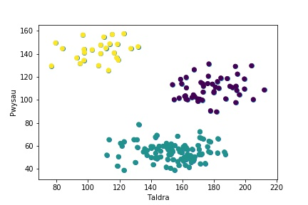
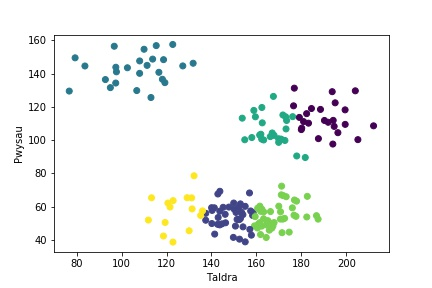

Clystyru K-Cymedr
Tiwtorial yn Python
Yn y tiwtorial hwn mi wnawn edrych ar ddata o daldra a phwysau 175 wahanol berson. Mi allwch chi lawrlwytho y data yma o fan hyn: https://dysgupeirianyddol.github.io/lawrlwythiadau/ I gychwyn bydd rhaid llwytho’r pecynnau pandas, matplotlib.pyplot ag sklearn.cluster drwy redeg y côd canlynol:
>>> import pandas as pd
>>> import matplotlib.pyplot as plt
>>> import sklearn.cluster
Y rŵan mi wnawn lwytho’r data i mewn i’n gwaith gan redeg y côd:
>>> data = pd.read_csv('taldra-pwysau.csv')
Mae’r string sydd mewnbwn y ffwythiant pd.read_csv yn cyfeirio at y lleoliad ar ein cyfrifiadur lle gallwn ganfod y ffeil csv priodol. Rhaid gwneud yn siŵr eich bod yn defnyddio’r lleoliad cywir i’r lleoliad o’ch ffeil chi. Unwaith fydd wedi cael ei llwytho, allwn ni gweld yn fras y data gennym ni.
>>> data.head()
I weld y data mewn ffordd fwy gweledol, wnawn blotio graff gwasgariad o’r data.
>>> plt.scatter(data['Taldra'], data['Pwysau']);
>>> plt.xlabel('Taldra')
>>> plt.ylabel('Pwysau')
>>> plt.show()

Fel gwelwn, mae’r data yn edrych fel ei fod mewn tri chlwstwr. Felly wnawn ddefnyddio’r ffurf algorithm dysgu peirianyddol i’w labelu.
>>> kmeans = sklearn.cluster.KMeans(n_clusters=3).fit(data)
>>> data['Cluster (k=3)'] = kmeans.predict(data)
Gallwn weld y newid hwn gan ddefnyddio’r un côd a ddefnyddion yn gynharach.
>>> data.head()
Fel y gwelwyd, mae’r data wedi’i rhoi i mewn i dri chlwstwr ac wedi’i labelu gyda rhif y clwstwr. Gan fod pob pwynt yn y data nawr gyda label, allwn ni creu’r plot eto ond gyda bob clwstwr yn lliw gwahanol.
>>> plt.scatter(data['Taldra'], data['Pwysau'], c=data['Cluster (k=3)']);
>>> plt.xlabel('Taldra')
>>> plt.ylabel('Pwysau')
>>> plt.show()
Sy’n rhoi:
Fel y gwelwn, gweithiodd yr algorithm yn wych. Wnawn nawr trio clystyru k-cymedr gyda k yn hafal i 6.
>>> kmeans = sklearn.cluster.KMeans(n_clusters=6).fit(data)
>>> data['Cluster (k=6)'] = kmeans.predict(data)
Sy’n rhoi:
>>> data.head()
Gallwn hefyd gweld canlyniad rhoi’r data i mewn i 6 clwstwr gwahanol:
>>> plt.scatter(data['Taldra'], data['Pwysau'], c=data['Cluster (k=6)']);
>>> plt.xlabel('Taldra')
>>> plt.ylabel('Pwysau')
>>> plt.show()
Sy’n rhoi:
Dyma sut y mae’r data yn edrych ar ôl phrosesu drwy glystyru 6-cymedr.